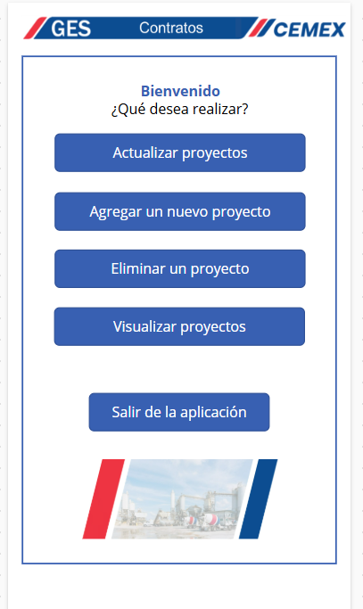
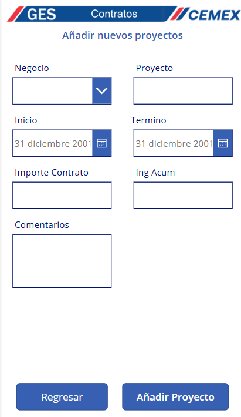
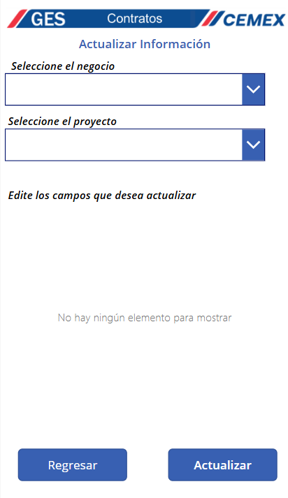
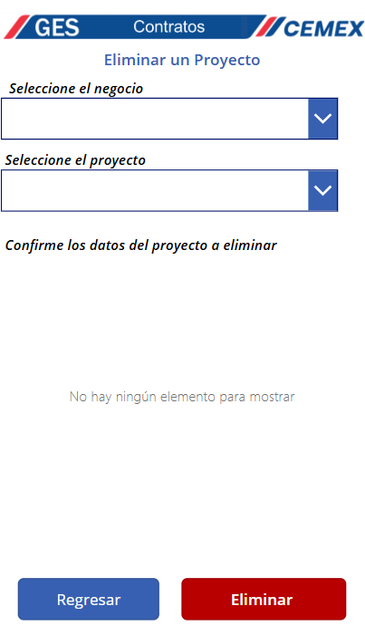

Sistema de seguimiento de contratos
Ciclo cerrado de captura, actualización y visualización para la cartera de obra pública del área: el equipo registra desde el celular y el tablero se actualiza solo.
El problema
El avance de cada contrato vivía en hojas de cálculo que se actualizaban a mano y se compartían por correo. Nadie sabía cuál era la versión buena, y armar el reporte de avance era un trabajo manual que se repetía cada periodo.
Lo que construí
Una app móvil con alta, edición, baja y consulta de proyectos sobre SharePoint. Un flujo automático que detecta cada cambio, refresca el modelo de Power BI y notifica al equipo. Y un tablero con KPIs y diagrama de Gantt.
El resultado
Una sola fuente de verdad. El cambio capturado en campo llega al tablero en menos de cinco minutos, sin que nadie toque un archivo. El reporte de avance dejó de armarse: ya existe.
Arquitectura
Tablero de control

Cuatro indicadores de cartera, filtros por negocio, proyecto, cumplimiento y año, y un Gantt que muestra la línea de tiempo real contra el avance de cada contrato.
Aplicación móvil




Nueve pantallas con confirmación antes de cada operación que modifica datos. Diseñada para usarse desde el teléfono, en campo.